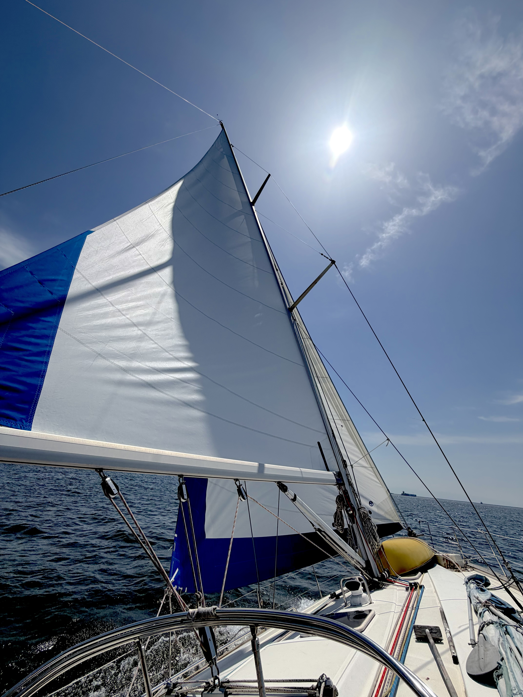

休日に、継続して海へ出られる環境。
毎週日曜の定例活動があるため、生活リズムの中に自然と海の時間を組み込めます。「次の機会がいつかわからない」というモヤモヤがありません。
学生時代に夢中になった海。仕事の中で少し遠くなった海。
ブランクは、ここでは何の問題にもなりません。
サウサリートヨットクラブには、5年、10年、ときには20年のブランクを経て戻ってこられた方が、いくつもの世代にわたって在籍しています。
若いころに親しんだロープの感触、舵を握る感覚は、思っているよりずっと、体が覚えているものです。
私たちはレース志向ではなく、クルージング中心の活動です。
だから、「速く動かさなければ」「思い出さなければ」という気負いなく、ご自分のペースで海に馴染んでいただけます。
毎週日曜の定例活動があるため、生活リズムの中に自然と海の時間を組み込めます。「次の機会がいつかわからない」というモヤモヤがありません。
競い合うことが目的でない分、その日の風と相談しながら最も気持ちのいいコースを選べます。海の上にいることそのものを、ゆっくり楽しめる活動です。
セイルトリム、ヘルム、ロープワーク。経験のある方は、ご希望に応じて担当していただけます。ブランクの方は、感覚を取り戻すところからゆっくりと。
「自分に合う場所か」を判断するのは、実際に乗ってみてからで構いません。体験参加は無料で、その後の入会も必須ではありません。
私たちは「巧くなる」ことを目的にしていません。
上手に走らせること、よりも、心地よく走らせること。
メンバーが入れ替わってもこの姿勢が変わらないからこそ、ブランクを経て戻ってこられる方が安心して馴染めるのだと思っています。
ロングクルージングでは、瀬戸内の島々を巡る2〜3日の航海も。
技術を取り戻したい方には、それを試す場面も自然と訪れます。
無理せず、楽しく、長く。それが私たちの基本姿勢です。

「久しぶりにロープを握って、
手のひらが思い出した感覚があった。
——それで十分でした。」
— A returning member, after 15 years